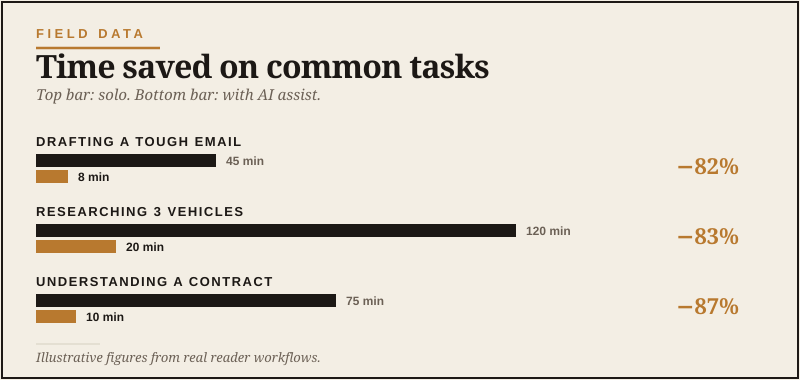
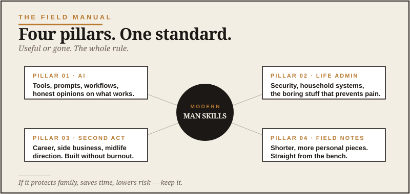

Start Here
Forty-five minutes. Three reads. One real opinion.
Here’s the deal. AI showed up in everybody’s life over the last couple years, and most of the advice about it is built for people who already live online — coders, founders, marketing kids, productivity hustlers.
That’s not most of us. Most of us have careers, families, businesses, and a lot of other things competing for attention. So the question isn’t “how do I become an AI expert?” The question is “what do I actually do with this thing?”
This page is your shortcut. Three articles, in this order. Read in sequence — each one builds on the last.

What the Heck Do I Do With AI?
Frames the whole site. How to think about AI as just another sharp new tool — not a tech revolution to fear or chase.

ChatGPT vs Claude vs Gemini
The short, honest comparison. Three tools that matter, one to start with, no best-of lists.

The Second-Act AI Playbook
Career change, side business, retirement runway. Use AI to test what's next without burning months on dead ends.

The rule of the house
If something here helps you think better, save time, or make a smarter decision — keep it. If it’s just shiny, ignore it. That’s the whole standard.

After those three: where to go next
Once you’ve got the foundation, here’s how to choose what to read next based on what’s on your mind.
If you want to actually use AI well

Prompts That Actually Work
The foundation skill of getting good answers.

How to Build an AI Habit
The 30-day rule and why it works.
If you’re thinking about what comes next in life

The Quiet Reset
The midlife moment, named honestly.

The AI Anxiety Nobody Talks About
The quiet worry many capable men carry.

What AI Won't Do For You
The contrarian read on the limits.
If you want to put AI to work this week

AI for Trip Planning
Real workflow, not generic Wikipedia.

AI for Big Purchases
Cut through marketing. Decide without regret.

AI for Confusing Documents
Insurance, contracts, medical reports.

AI for Money Decisions
Think clearly about money — without replacing your accountant.

AI for Learning Anything
The best learning tool — and the trap that makes it useless.

AI as a Thinking Partner
The most underrated thing AI can do for grown men.